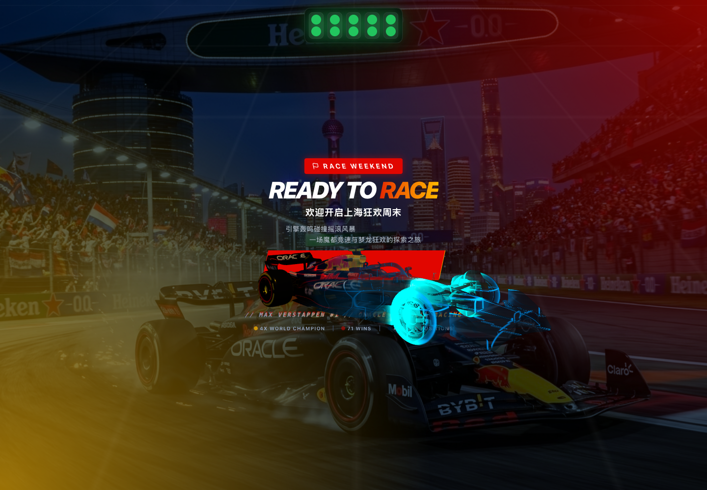

The baked Red Bull F1 model now has four independently transformable wheels, while the welcome page drives wheel spin, road flow, particles, trails, and body vibration from one smooth speed signal.
red_bull_f1_rigged.glb with four wheel pivots and four wheel meshes.GLB contract, deterministic motion checks, TypeScript, Vite production build, git whitespace check, Blender viewport review, and desktop browser flow passed.
